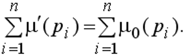

Свойства сетей Петри:
- Ограниченность.
Это свойство связано с введением ограничений на число меток в позициях. Позиция pi называется k-ограниченной, если количество фишек в ней не может превышать целого числа k, т. е. Сеть Петри называется ограниченной, если все ее позиции ограничены. - Безопасность.
Позиция сети Петри называется безопасной, если число фишек в ней никогда не превышает единицы. Сеть Петри безопасна, если безопасны все ее позиции. Это свойство важно при интерпретации позиций как простых условий: если в позиции есть фишка, то условие выполняется, если нет, то не выполняется. Безопасную позицию можно реализовать одним триггером. - Сохраняемость.
Сеть Петри С = (P, T, F, H, μ0) называется строго сохраняющей, если сумма фишек по всем позициям остается строго постоянной в процессе выполнения сети, т. е. для всех возможных маркировок μ'  - Живость.
Под живостью перехода ti понимают принципиальную возможность его срабатывания при функционировании сети Петри. Тупик в сети Петри – это переход (или множество переходов), который в имеющейся маркировке μ' и в последующих достижимых из μ' маркировках не разрешен. - Достижимость.
Свойство достижимости используется при установлении возможности возникновения некоторой ситуации в системе. Пусть проверяемая ситуация описывается разметкой μ'. Возникает задача: достижима ли маркировка μ' из начальной маркировки μ0 данной сети Петри. Задача достижимости является одной из наиболее важных задач анализа сетей Петри.